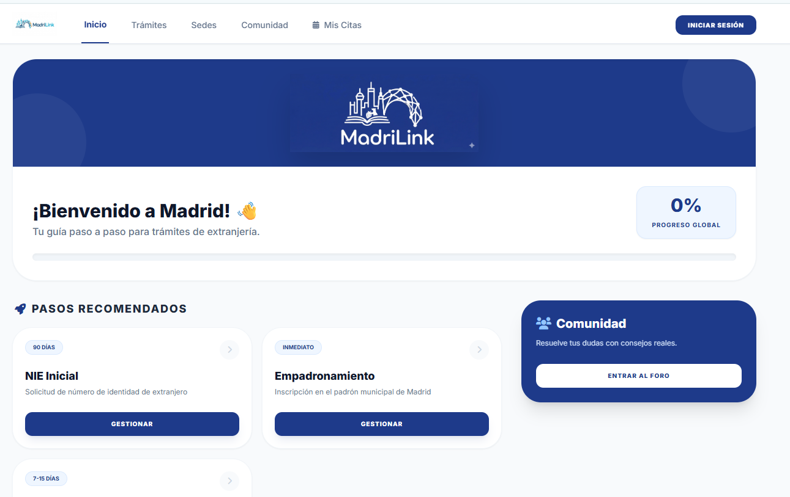
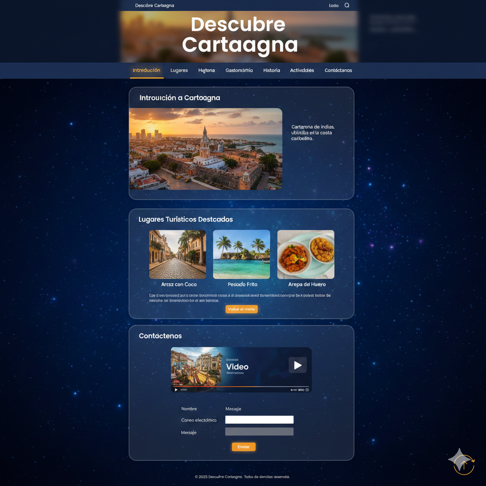
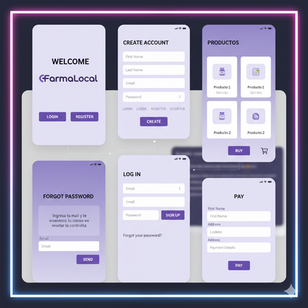

Luisa Fernanda Rincón Durán
Data Analytics & Software Consultant
Administradora de Empresas + Desarrolladora de Software + Máster en Análisis de Datos. Más de 5 años transformando datos en estrategia e implementando soluciones backend/frontend/mobile con Java, Spring Boot, Kotlin, Angular y Power BI.
Sobre Mí: Sinergia Negocio + Tech + Data
Mi propuesta de valor radica en conectar la visión financiera y estratégica empresarial con la solidez técnica del desarrollo de software y la precisión de la analítica de datos.
Visión de Negocio
Formación en Administración de Empresas enfocada en ROI, eficiencia de procesos, traducción de requerimientos comerciales y alineación estratégica con stakeholders.
Desarrollo Backend, Frontend & Mobile
Microservicios con Java 21 y Spring Boot, apps móviles nativas con Kotlin & Jetpack Compose, interfaces reactivas con Angular/TypeScript y testing avanzado (JUnit 5, Testcontainers).
Data Analytics & BI
Modelado predictivo (Python, SQL), procesos ETL, dashboards ejecutivos en Power BI y análisis de comportamiento para decisiones basadas en datos reales.
"Especializada en integrar herramientas de Inteligencia Artificial Generativa en IDEs y flujos de trabajo para acelerar la entrega de valor con alta calidad."
Experiencia Profesional (5+ Años)
Software Developer Intern – Consultoría Tecnológica
SNGULAR | Mar 2026 – May 2026Madrid, España (Remoto)
- Backend en Microservicios: APIs REST robustas con Java 21, Spring Boot, MapStruct y persistencia en PostgreSQL / Oracle.
- Frontend Reactivo: Componentes dinámicos e integrados en Angular con TypeScript.
- Testing & Calidad: Suites unitarias (JUnit 5, Mockito), PoC con Testcontainers e implementación de Mutation Testing.
- Spikes & IA: Integración local de Google Cloud Pub/Sub y evaluación de IA en IDEs para aceleración del desarrollo.
Analista de Datos / BI Analyst
Nutrabiotics | Ene 2022 – Ene 2024Bogotá, Colombia
- Automatización BI: Migración de reportes manuales a Power BI, reduciendo en un 40% el tiempo de generación de informes.
- Forecasting de Ventas: Modelos predictivos y monitoreo en tiempo real por región y canal.
Analista de Datos & Marketing
Celagem | Ene 2021 – Ene 2022Bogotá, Colombia
- Optimización ROI: Modelos de atribución digital logrando un aumento del 25% en tasa de conversión anual.
- Analítica Web: Auditorías con Google Analytics presentadas directamente a la Junta Directiva.
Analista de Datos & Procesos
Promotick | Abr 2018 – Ene 2021Bogotá, Colombia
- Integridad de Datos: Reportes de KPIs en Excel/SQL incrementando la calidad de datos a más del 85%.
- Ahorro Operativo: Detección de ineficiencias transaccionales generando un ahorro anual del 10%.
SNGULAR Technologies
"Luisa ha demostrado ser una profesional íntegra, con una mente analítica brillante, un fuerte espíritu de superación y una madurez técnica encomiable. Su proactividad y frescura para proponer alternativas técnicas han aportado un valor real tangible a nuestros proyectos."
Carlos Cenjor Ramírez
Responsable de Proyecto y Mentor en Sngular
Aptitudes Destacadas en Recomendación:
Stack Tecnológico & Competencias
Software Development, Architecture & Mobile
Data Analytics, BI & Databases
Testing, Cloud & Mobile Tools
Liderazgo & Habilidades Estratégicas
Proyectos Destacados
Casos de estudio, aplicaciones móviles, proyectos integradores y repositorios que reflejan mi capacidad técnica y analítica.
Madrilink
Plataforma web integrada desarrollada como proyecto final de estudios. Diseñada con arquitectura modular backend, consumo de APIs y gestión de datos orientada a resolver necesidades comunitarias/urbanas en Madrid. Incluye memoria técnica y ejecutable completo.

Farmacol – Mobile App
Aplicación móvil nativa para Android para catálogo y pedido de farmacia. Desarrollada con Kotlin y Jetpack Compose, persistencia local con Room DB (DAOs, Entities), arquitectura MVVM, autenticación de usuarios y gestión del carrito de compras en tiempo real.

Descubre Cartagena
Página de aterrizaje optimizada con estructura semántica, diseño adaptable para dispositivos móviles y navegación intuitiva para usuarios turísticos. Demuestra buenas prácticas en maquetación web responsive.

Prototipo FarmaLocal
Diseño interactivo para e-commerce farmacéutico local en Figma, estructurado para maximizar tasas de conversión y facilitar checkout móvil. Incluye prototipado de pantallas de catálogo, login y pagos interactivos.

Educación & Certificaciones
Formación Académica
Máster en Análisis de Datos (Big Data & Data Science)
Prometeo by thePower, Madrid, España | 2024 – 2026
Tecnólogo en Análisis y Desarrollo de Software (ADSO)
Prometeo by thePower, Madrid, España | 2024 – 2026
Pregrado en Administración de Empresas
Universidad Externado de Colombia, Bogotá | 2013 – 2018
Certificaciones & Idiomas
Idiomas
Inglés: Profesional B2 (Certificación TOEFL / Interacción técnica y de negocios fluida).